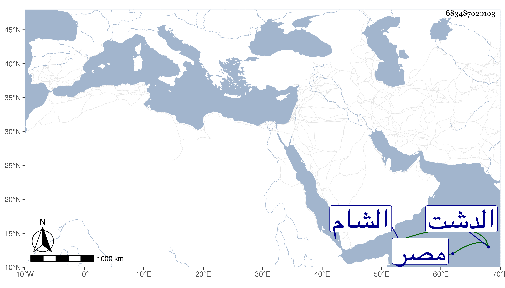

0902Sakhawi.DawLamic.ITO20230111-ara1.EIS1600.683487020103
Biography ID: 683487020103
1061
ايدكو ملك الترك وتدعى قبيلته قرنكرات من أرض الدشت . ترقى إلى أن صار من أمراء الخان توقياميس وأحد رؤوس أمراء الميسرة المعدين لمهمات الأمور وللمشورة والرأي إلى أن أحس من اخان بالتعبر عليه فخاف منه وأخذ حذره واستعد للفرار منه سيما وقد قال له وهو محمور لي ولك وأجابه بقوله أعيذ الخان من أن يحقد على عبده ثم احتال حتى فر ولم يفطن به إلا وقد قطع مسافة وما أمكن إدراكه فوصل إلى تيمور فشرح له أمره وأغراه بالمشار إليه واستلوش عساكره بحيث كان ذلك حاملا له على المسير إلى الدشت بعساكر لا تعد كثرة فكان الظفر له بانهزام توقياميس وغنم تيمور مالا يدخل تحت الحصر وعظم ايدكو عنده ومع ذلك فخادعه بحيلة حتى مكنه من الانصراف لأهله ثم سقط في يد تيمور ولم يعلم أنه انخدع لغيره وما زال ايدكو حتى استعد لقتال توقياميس وكانت بينهما وقعات كثيرة آل الأمر فيها إلى إخراب الدشت وصارت قفارا ثم انهزم ايدكو وتشتت جموعه ولم يوقف له على خبر وصفا الوقت لتوقياميس ولم يلبث ايدكو أن مات قريبا جريحا في نحر سيحون في سنة أربع عشرة ، وكان من رجال العالم ذا أخبار غريبة ونوادر عجيبة ومكايد في أعدائه صائبة وأفكار بديعة ووقائع وسياسات ومحبة في العلماء والصلحاء ومواظبة على متابعة شرائع الإسلام له عشرون ولدا ملوكا ما منهم إلا من له عمل بمفرده وجند يطيعه ، وأقام في الدشت عشرين سنة وكانت أيامه غرة في جبين الدهر وهو الذي منع الطير من بيع أولادهم بحيث قل جلبهم إلى الشام ومصر طوله المقريزي في عقوده والله أعلم بحقيقة ما أثبته .
